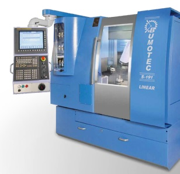

-
Входной контроль

MANTIS Elite — настольная система, рекомендутся использовать для визуального контроля печатных узлов в процессе их сборки и ремонта.
-
Трафаретная печать
Miniko — трафаретный принтер (полуавтомат трафаретной печати), рекомендуется использовать для качественного нанесения паяльной пасты на печатные платы в условиях мелкосерийного много-номенклатурного производства.
-
Визуальный контроль
VS8 — рабочее место визуального контроля, рекомендуется использовать для контроля качества сборки печатных узлов с компонентами поверхностного монтажа.
-
Установка SMD компонентов
Essemtec FOX — универсальный многофункциональный автомат, рекомендуется использовать для установки компонентов и дозирования паяльной пасты в условиях много-номенклатурного мелкосерийного производства. Автомат способен работать одновременно с большим количеством типономиналов компонентов и обеспечивать сборку печатных узлов высокой степени сложности.
-
Пайка
RO300FC — печь оплавления конвекционная, рекомендуется использовать в технологии поверхностного монтажа (пайка бессвинцовых паяльных паст или полимеризации адгезивов). Печь проста в управлении для изготовления печатных узлов в условиях мелкосерийного и опытного производств.
-
Оптическая инспекция
Viscom S2088-II — система оптической инспекции, рекомендуется использовать в условиях мелкосерийного много-номенклатурного производства. Модель осуществлят контроль на всех стадиях поверхностного монтажа: нанесение пасты, установка компонентов и контроль после пайки.
-
Пайка штырьевых компонентов
SMARTFLOW 2020 — система селективной пайки штыревых компонентов, рекомендуется использовать в условиях опытного и мелкосерийного производств. Печь позволяет паять платы с габаритами до 508 × 508 мм. Особенность модели — возможность использования традиционной волны припоя вместо миниволны.
-
Промывка
OKO 1000 — система струйной промывки, рекомендуется использовать в технологии отмывки (очистки) печатных узлов. Система производит отмывку горячей или холодной водой, промывку с моющими средствами, ополаскивание и сушку горячим воздухом загруженных в нее изделий.
-
Ультразвуковая очистка
UC09 — ультразвуковая ванна, рекомендуется использовать для отмывки печатных узлов от остатков флюсов, паяльной пасты и других загрязнений в условиях экспериментального, опытного и мелкосерийного производств. Установка позволяют реализовать экономичный вариант отмывки с применением трех возможных технологий: водной (в качестве моющей жидкости используется деионизованная вода), микрофаз по МРС технологии и с применением промывочных жидкостей типа Zestron FA.
-
Контроль качества
ERSASCOPE-2 — система визуального контроля (инспекции), рекомендуется использовать для контроля качества пайки интегральных схем со скрытыми выводами, таких как BGA, μBGA и FlipChip.
-
Рентгеновский контроль
Phoenix Microme|x Neo 180 — система рентгеновского контроля, рекомендуется использовать для инспекции паяных соединений печатных узлов. Система позволяют проводить инспекцию компонентов с выводами под корпусом, а также контролировать качество паяных соединений.
-
Функциональный контроль

SPEA 4080 — высокоточная установка электрического тестирования плат с помощью летающих пробников. Установка оснащена линейными оптическими датчиками положения, обеспечивающие субмикронное разрешение на каждой оси X, Y, Z.
-
Нанесение влагозащитных покрытий
DS101 — установка влагозащиты, рекомендуется использовать для прецизионного нанесения влагозащитных покрытий на печатные узлы методом их погружения в ванну с материалом покрытия.
-
Сушка влагозащиты

UV9 — установка ультрафиолетового отверждения покрытий, рекомендуется использовать для отверждения влагозащитных покрытий, нанесенных на печатные платы. Система отверждения основана на работе дуговой лампы с регулируемой интенсивность УФ-излучения.
-
Газовая атомизация
HERMIGA — газовый распылитель металлов с индукционно нагреваемым тиглем, моноблочной системой распыления металла, возможностью распыления инертным газом и системой двухэтапного сбора порошка.
-
3D-печать (PCM-технология)

VoxelJet VX1000 — 3D - принтер,
-
3D-печать (EBF3-технология)

Arcam Q20 — 3D - принтер электронно-лучевого плавления, рекомендуется применять для изготовления лопасти турбин и деталей конструкции летательных аппаратов. Отличительной характеристикой данной модели является большая область построения (Ø350×380 мм). Arcam Q20 комплектуется регенерационной системой (PRS) для закрытого нанесения порошкового материала.
-
3D-печать (DMD-технология)
DMD 105D — cистема лазерной наплавки металла методом прямого наплавления различных порошковых материалов с помощью лазерной обработки. Система представляет 5-осный промышленный комплекс, который рекомендуется использовать для построения крупногабаритных изделий из металла любой сложности, а также для производства биметаллических компонентов.
-
3D-печать (SLM-технология)

SLM Solutions 280HL — установка селективного лазерного плавления металлических порошков. Рекомендуется применять для мелкосерийного производства сложных металлических изделий из нержавеющей и инструментальной стали, алюминиевых, титановых сплавов, кобальт-хрома. Отличительная особенность - наличие двух лазеров 400 Вт и более мощный 1000 Вт. Использование двух лазеров позволяет установке создавать изделия быстрее без потери качества.
-
Размерный контроль
МС 55 — координатно-измерительная машина, рекомендуется использовать для измерения средних и малогабаритных промышленных изделий. Измерительная машина позволяет обеспечить стабильные результаты измерения деталей с погрешностью от 2,2 мкм.
-
Компьютерная томография
Phoenix V|tome|x C450 — система компьютерной томографии, рекомендуется использовать для неразрушающего контроля качества на металлообрабатывающих производствах. Система позволяет работать с крупногабаритными образцами размером до 500×1000 мм. Система позволяет проводить метрологические измерения с точностью 20мкм. Томограф внесен в Госреестр СИ.
-
Отжиг
N 41/H — печь, рекомендуется использовать для отжига, закалки и пайки деталей, в том числе изготовленных по аддитивным технологиям. Печь позволяет проводить закалку в среде защитного газа.
-
LASERTEC 65 3D — гибридный станок, рекомендуется использовать в сочетании процессов лазерного осаждения и фрезерной обработки. Станок позволяет проводить 5-осевое наплавление материала через сопло подачи порошка, а также 5-координатную фрезерную обработку.
-
Viscom X7056-II — система автоматической 3D-рентгеноскопии и оптической инспекции, рекомендуется использовать для выявления визуально скрытых дефектов.
-

BUMOTEC S-191 — прецизионный токарно - фрезерный обрабатывающий центр с ЧПУ, рекомендуется использовать для точения, фрезерования и шлифования отдельных деталей или прутковых заготовок за один установ. Станок позволяет проводить обработку деталей с шести сторон.
-
Рентгенконтроль
(система рентгеновского контроля) -
Отжиг
(печь)